Hello. My name is Han Ye-seul, and I participated as a candidate in the 51st session, serving as a team member for the first time. Honestly, I wasn't sure if the accompaniment would be heard, so I kept playing soft background music (BGM) and hesitated to come forward. But since it's the final testimony, I decided to share.
This is because every moment I served in New Heart's 54th session has been a great testimony for me. When I participated as a candidate in the 51st session at my husband's suggestion, I kept asking, "What will we do? Where are we going? What's the schedule?" but no one told me anything. I had to go without any information, like boarding a deep-sea fishing vessel. Last year, it was during the weekdays, and since Wednesday was a workday, I traveled from Cheonan to Yeoncheon by train and subway after work, arriving around 11 p.m.
I was told not to speak, and when I asked, "Why?" I didn't get an answer. As a candidate, I couldn't quite understand the terms they used, and though I was tired, the sessions were long. Despite struggles during the program, I experienced many awakenings and moments of repentance. My husband hadn't shared much about New Heart initially, which made me slightly resistant, but I didn't show it. At the end, I said, "I really enjoyed it. I want to serve as a team member next year." When the announcement came this year, I eagerly asked my husband, "Did you apply? Did you apply?" Thankfully, he joined me in serving.
While serving on the praise team this time, I found myself interceding more for the candidates than focusing on my own blessings. During prayer times, I wasn't able to pray much for myself because I was engaged in singing, playing the accompaniment, and serving in small ways.
The team members I observed as a candidate worked tirelessly, waking early and staying up late. Watching them, I wondered, "Can I really do this?" Moreover, since I was pregnant, I worried about whether I had the physical strength to manage. But as I mentioned earlier, all of this was God's grace from start to finish. While serving on the praise team, I couldn't help but intercede for the candidates. Through this, God filled my heart with His love for these souls and His longing to reach them. Even when I was serving quietly in the back as an accompanist, He led me to intercede for the worship, pouring His heart into me.
On the third evening during prayer, I was standing by, ready to assist with water or tissues if needed. Toward the end, I just stood still. In that quiet moment, I felt as if God called out, "Ye-seul," in my heart.
From that moment, I couldn't do anything but stand there with my hands raised in worship. God reminded me of Mary and Martha. While serving Jesus is important, what He truly desires is for us to sit at His feet and listen. I realized that while serving is good, I must first be present before Jesus, listening to His words. It led me to resolutely pray, "God, while serving is valuable, I will prioritize sitting before You. Your ministry is important, but I will stand before You first." I couldn't help but bow down in gratitude, realizing God knew my situation and was watching over me.
Before attending, I was worried about my physical condition. I had been resting at home, used to sleeping and eating leisurely. Suddenly waking up at 6 a.m., serving until late, and repeating that schedule concerned me. However, God's grace sustained me. Even with short sleep, God provided deep rest. Of course, when I was extremely exhausted, I took breaks, but both physically and spiritually, God rejuvenated me.
I encourage all candidates to serve as team members. The grace you receive as a candidate differs from the grace experienced while serving as a team member. If you have the time and opportunity next year, I hope you participate. Also, I nearly forgot to mention—please pray before deciding to join. I realize now how lacking I was in prayer for both myself and all of you.
If I'm given another opportunity next year, I will pray diligently, actively participate in team meetings, and prepare wholeheartedly for the souls God will entrust to us. Thank you.


 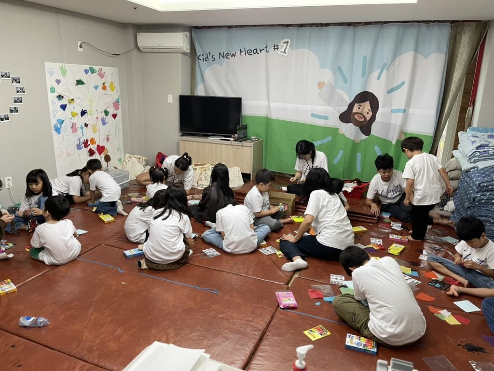
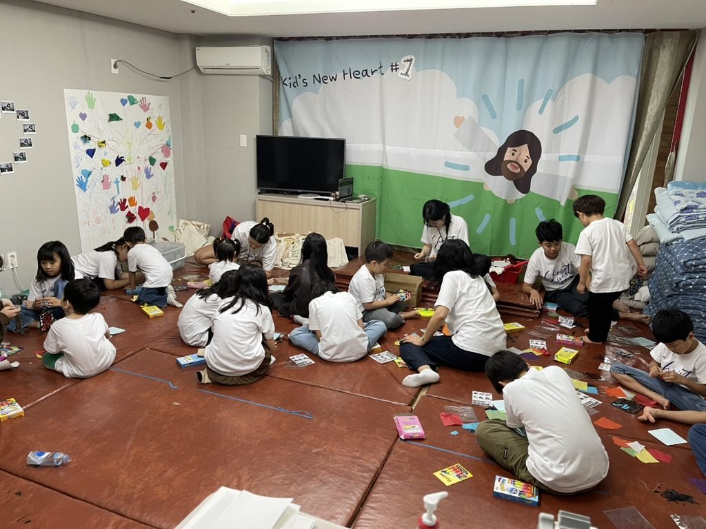
 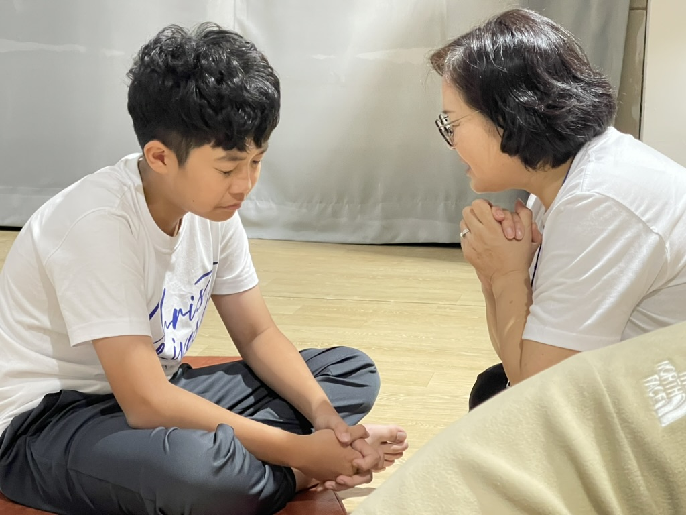
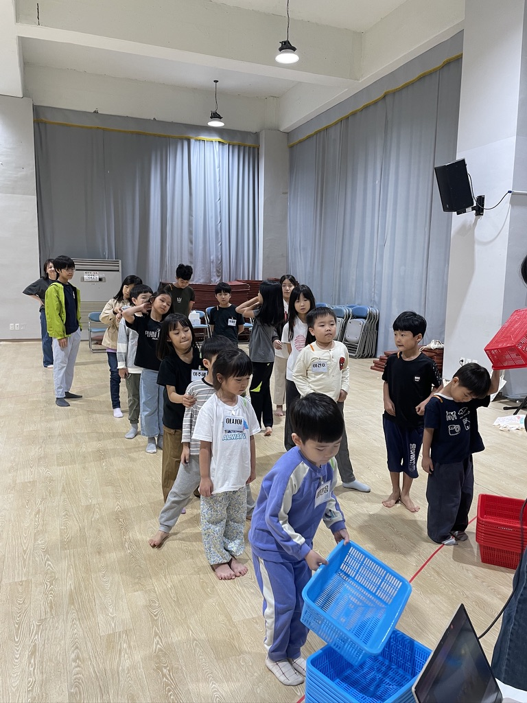
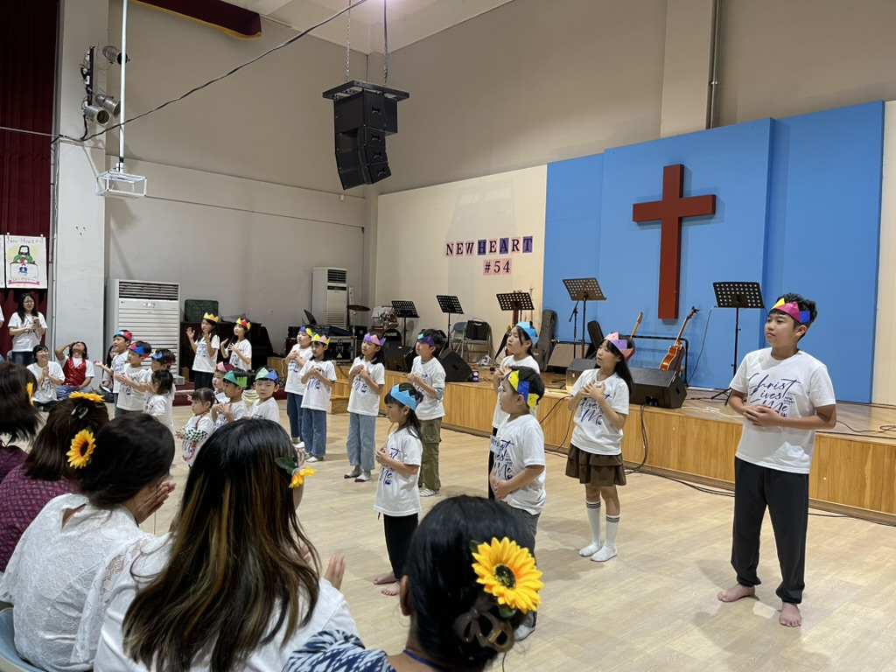
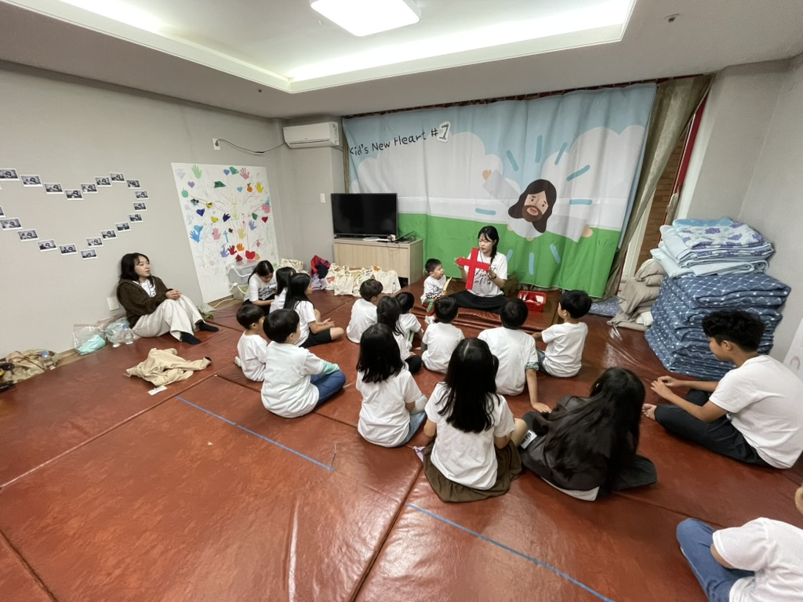
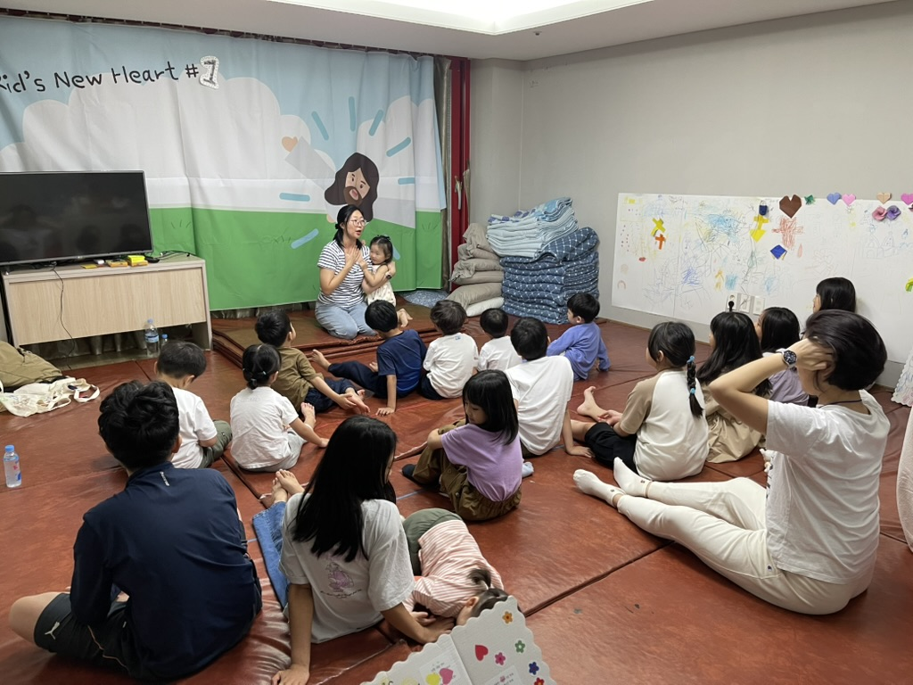
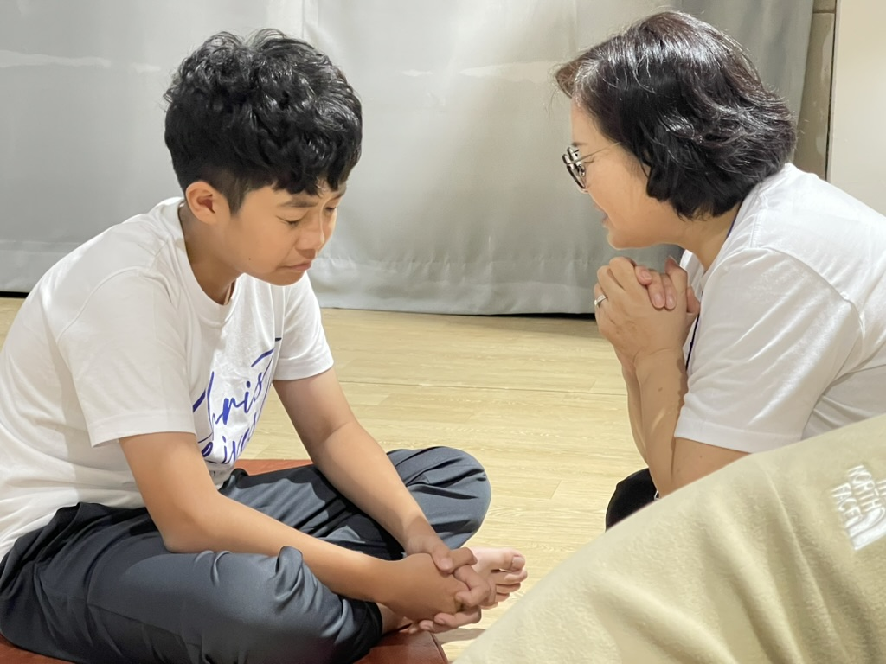
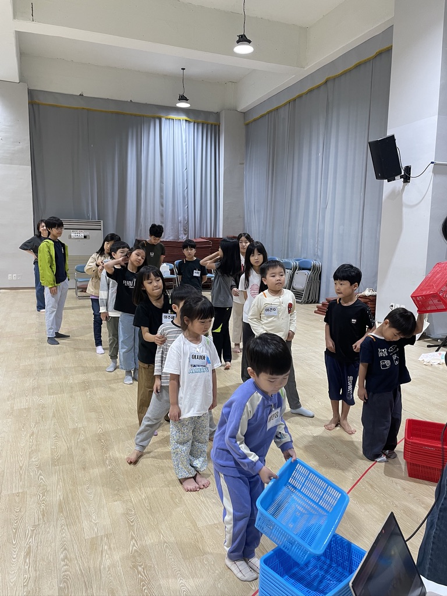
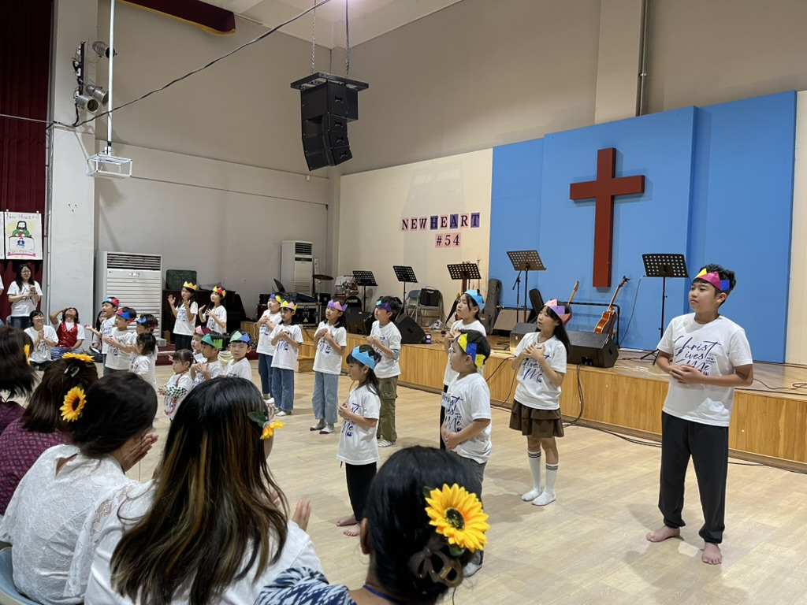
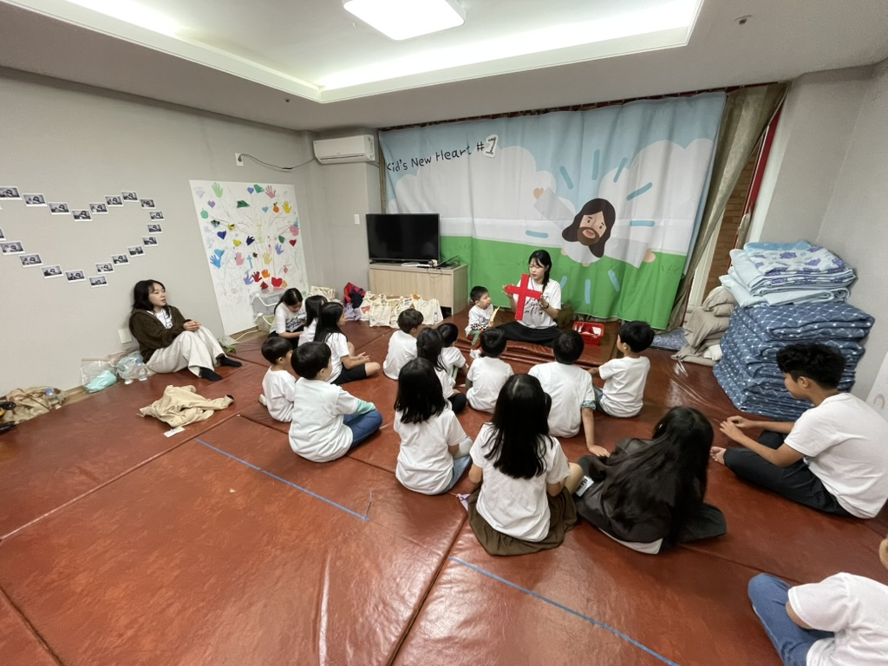
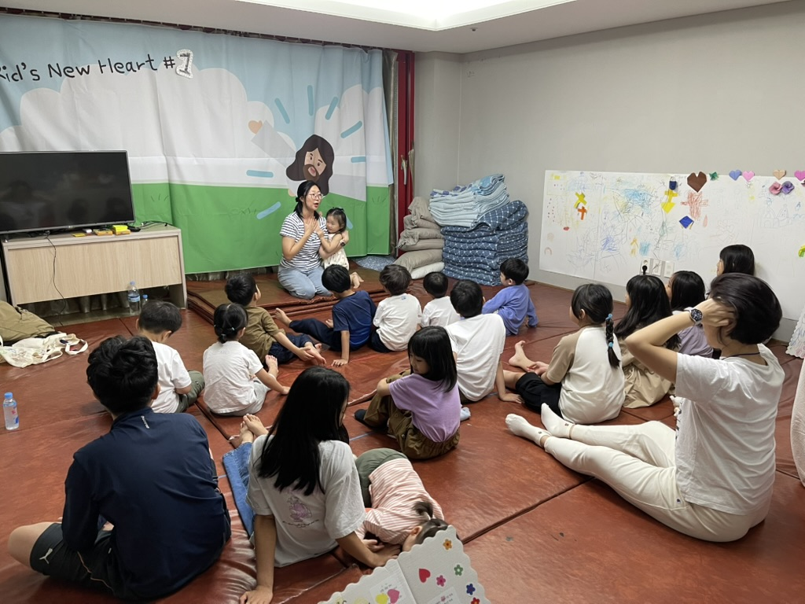